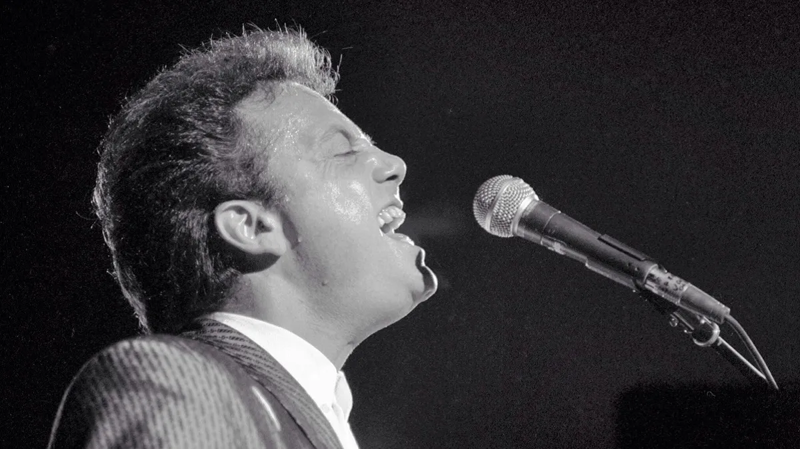

Music Tastes
"There is no surer foundation for a beautiful friendship than a mutual taste in literature."
― P.G. Wodehouse
In this spirit, with "literature" expanding to include music, TV, and YouTube as well, I feel the whole of my music interests can in a rudimentary manner be summarized by three artists who've had an immense role in shaping my..., for lack of a better word, playlist!—Billy Joel, Cat Stevens, and Colin Hay.

Billy Joel. Photo by David Shankbone. Licensed under CC BY-SA 3.0.

Cat Stevens. Photo by Bryan Ledgard. Licensed under CC BY 2.0.

Colin Hay. Photo by Daniel B. Licensed under CC BY 2.0.
These artists, with their exestential styles and timeless narratives, form the bedrock of my auditory escapism, a welcome respite from the abstract complexities of economic models. While I might not be able to articulate their mathematical elegance, their compositions certainly resonates with a certain precision of human (at least, my) emotion.